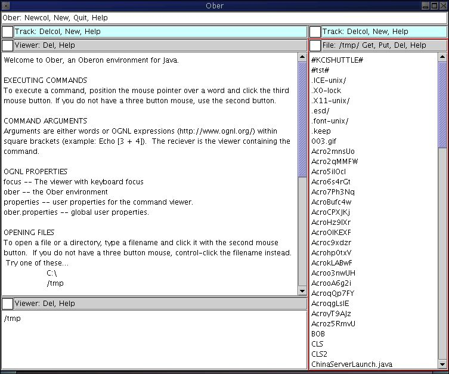
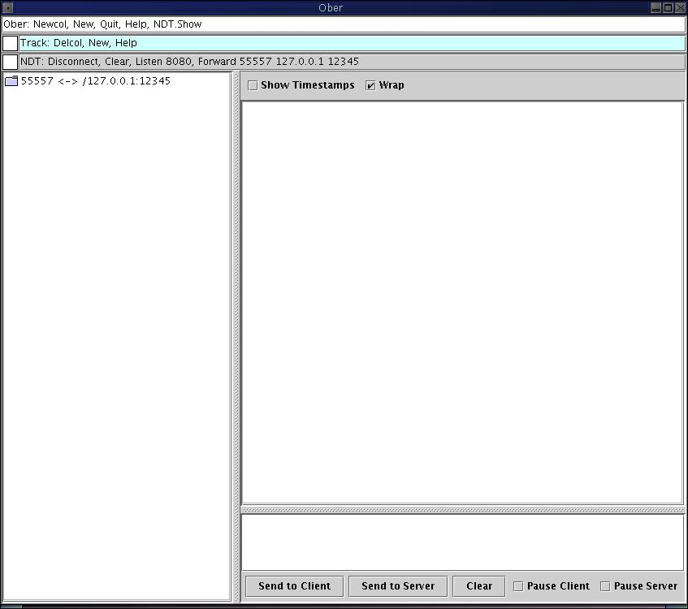

Ober brings the power of the Oberon interface to Java, blending command-line and GUI models. Ancestors are Oberon, Acme, and Wily.
Ober is a small extensible JFC (Swing) framework that provides moveable and resizeable views along with text file viewing/editing and a user command model, which integrates OGNL to handle embedded java expressions (in the OGNL expressions, 'this' is the current viewer). The command model supports namespaces and keyboard bindings. I like to think of it as Eclipse on a starvation diet.
Since you can use OGNL to evaluate Java directly, you can extend Ober by simply placing extension code in your classpath and adding a command to your .oberrc file to hook it into the current Ober view. Here is a sample .oberrc file.
Here is the project
Here is a link to the downloads. It comes in an executable jar, so just download it and double click it to see it go or run it from the command line (using "java -jar ober-0.9.5.jar" for example).
The Change log
The Todo list
Here is a screen shot of Ober in action:

Here is a screen shot of a protocol analyzer I wrote as an internal tool to help us debug a new version of Classic Blend. It only required one line of Java code for each command I added to Ober and a very small method to create a viewer for the protocol analyzer. Note that this shows how to integrate command-line behavior into a graphical front end. The "Forward" command takes three arguments. You just edit them in the "tag" for the viewer and then click on "Forward" to add a new forwarding listener to the analyzer.

Here are the entries in my .oberrc to integrate the analyzer...
Exec [topViewer().getTag().setText(topViewer().getTag().getText() + ", NDT.Show, /home/bill/.oberrc")] Exec [@ar.i12n.GuiMonitor@addNdtCommands(ober)]
The first line adds the NDT.Show command to the top tag in the window and the second command adds the NDT namespace to Ober.
Here is the code that I used to integrate the anaylyzer into Ober...
public static OberViewer currentViewer;
public static void main(String args[]) {
Ober ober = new Ober();
GuiMonitor mon = new GuiMonitor();
OberViewer main = ober.createMain();
ChannelMultiplexor.setMicroLogging(0);
GuiMonitor.addNdtCommands(ober);
main.getTag().setText(main.getTag().getText() + ", NDT.Show");
JFrame frame = ober.createFrame(main);
main.acceptViewer(mon.createViewer(ober));
frame.setSize(900, 700);
frame.setVisible(true);
mon.startNoGui();
}
public static void addNdtCommands(final Ober ober) {
ober.addNamespace("NDT", new String[]{});
ober.addCommand("NDT.Show", new OberCommand(" -- create a Network Diagnostic Tool") {
public void execute(OberContext ctx) {
ctx.getSourceViewer().topViewer().acceptViewer(currentViewer);
ctx.getSourceViewer().topViewer().getWrapper().repaint();
}
});
ober.addCommand("NDT.Listen", new OberCommand(" -- Listen a port.") {
public void execute(OberContext ctx) {
((GuiMonitor) ctx.getSourceViewer().getProperty("ndt")).dumpPort(Integer.parseInt(ctx.getArgumentString(1)));
}
});
ober.addCommand("NDT.Forward", new OberCommand(" -- forward to another connection.") {
public void execute(OberContext ctx) {
((GuiMonitor) ctx.getSourceViewer().getProperty("ndt")).forwardPort(Integer.parseInt(ctx.getArgumentString(1)), new InetSocketAddress(ctx.getArgumentString(2), Integer.parseInt(ctx.getArgumentString(3))));
}
});
ober.addCommand("NDT.Disconnect", new OberCommand(" -- Disconnect a channel.") {
public void execute(OberContext ctx) {
((GuiMonitor) ctx.getSourceViewer().getProperty("ndt")).disconnectChannel();
}
});
ober.addCommand("NDT.Clear", new OberCommand(" -- Clear inactive channels.") {
public void execute(OberContext ctx) {
((GuiMonitor) ctx.getSourceViewer().getProperty("ndt")).clearInactive();
}
});
}
public static OberViewer createViewer(Ober ober) {
if (currentViewer == null) {
GuiMonitor mon = new GuiMonitor();
currentViewer = new OberViewer(ober) {
public void dying() {}
};
Component comp = mon.createComponent();
currentViewer.getTag().setText("NDT: Disconnect, Clear, Listen 8080, Forward 55557 127.0.0.1 12345");
currentViewer.setComponent(comp, comp);
currentViewer.setProperty("ndt", mon);
mon.startNoGui();
}
return currentViewer;
}